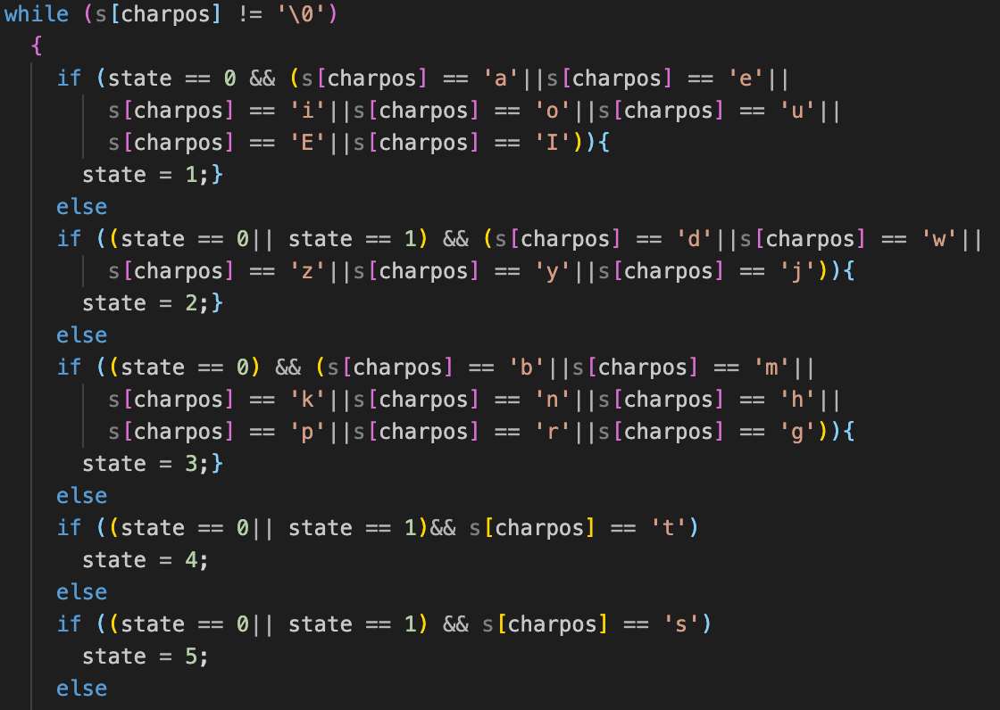

Develop with C++ using DFA graph
In this video you will see a quick skim of the code that was needed for this operation to be done. Then the code will get compiled and ran. When running the Input file will be entered and the program will take effect. Returning the word that was found and what kind of word that is i.e. PRONOUN, OBJECT, etc. It first checks the words using a DFA to see if in fact it is a Japanese word, then it will check what kind of word it is using another DFA by using the location of the word and other words that come before it.
Difficulties: The greatest struggle was that I am neither fluent or understand Japanese outside of my Anime knowledge. Another difficulty was configuring rules in which the language useses to create a DFA graph. Aside from getting the program to verify if it was a Japanese word, being able to determine what kind of word it is was equally as difficult being below a novice in the language.
How I Overcome: Luckily my professor at the time was Japanese and we had several Japanese foreign exchange students, I used their knowledge to my advantage. My professor was the greatest help as she was an avid coder and fluent in the language.